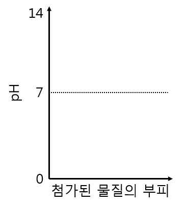

문제 4
4-1
동위원소와 동소체의 개념을 구별하여 설명하고, 각각 예를 들어보시오.
4-2
다음의 세 가지 경우의 중화적정실험을 고려해 보자.
1. 강산을 강염기로 적정
2. 약산을 강염기로 적정
3. 약염기를 강산으로 적정
a. 각 경우에 해당하는 중화적정곡선의 개형을 그리시오.
b. 중화점의 대략적인 위치를 표시하고, 그 이유를 설명하시오.

4-3
아세트산(\(\text{CH}_3\text{COOH}\))과 아세트산나트륨(\(\text{CH}_3\text{COONa}\))으로 구성된 완충용액은 4.8 부근의 pH를 유지한다.
(a) 두 물질의 수용액상에서의 반응식을 나타내시오.
(b) 이 완충용액에 강산인 HCl 을 넣어도 용액의 pH가 급격하게 변하지 않는 이유를 설명하시오.